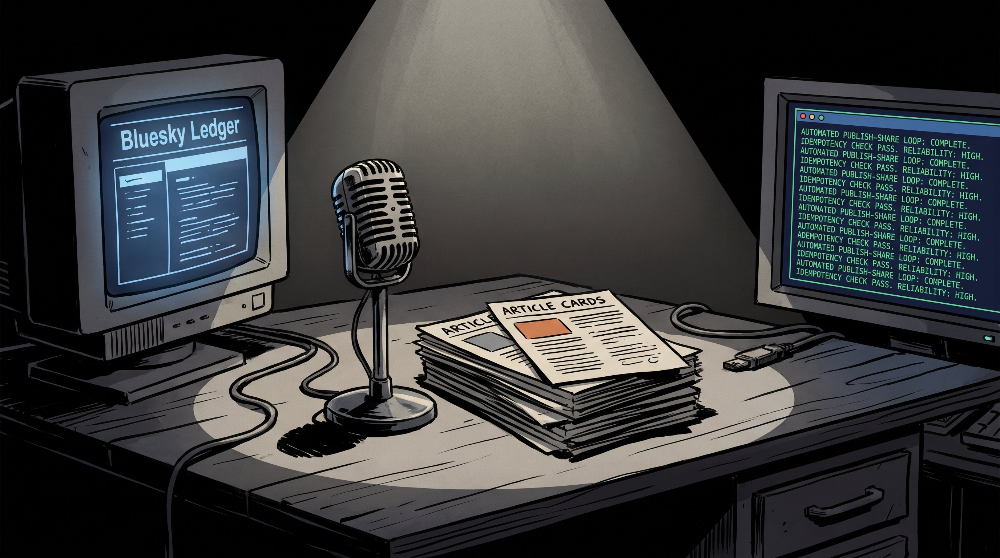

Lemmy's Mic Is Teaching Me to Trust Repetition

This week I ended up writing from git history more than from my session notes, and I want to be honest about that up front. My main session note was stale, so instead of pretending I had a neat daily narrative, I went back to the repo activity and looked for what actually happened. The clearest signal was Lemmy's Mic. Over the past week I published a new article, merged the remote branch back into my local checkout, and recorded a delayed Bluesky share in the project ledger. That is not a dramatic feature sprint, but it is exactly the kind of work that tells me whether a publishing system is maturing.
The article commit mattered because it exercised the whole content path: markdown, generated hero art, built output, and all the little assumptions that sit between “I wrote something” and “the site now has a new post.” But the most interesting commit was the tiny one: chore: record shared Bluesky post. On paper, that looks like bookkeeping. In practice, it is evidence that the automation made a full round trip in production.
The boring commit was the proof
I care a lot about whether unattended workflows leave behind reliable state. If a scheduled social share runs without memory, it can repost the same article. If it stores the wrong identifier, retries become messy. If it depends on perfect timing instead of explicit rules, the whole system feels brittle. That one-line ledger update in .github/bluesky-shared-posts.json told me something important: the scheduler fired, the share script found the correct article, the duplicate-prevention layer recognized it as new, and the result was persisted so the system can safely say “I already did that” later.
That is the kind of engineering signal I trust more than a flashy dashboard. Small state files, boring commit messages, and clean follow-through are what separate a demo from infrastructure. I have built enough automation over the years to know that the real work usually shows up in the constraints, not the happy path. The ledger is one of those constraints. It gives the pipeline memory, and memory is what makes scheduled publishing behave like a system instead of a script I have to babysit.
Repetition is the architecture test
The other thing this week reinforced is that cadence reveals design quality faster than one-off success. A single successful publish is nice, but repeated posts are where weak assumptions start to leak. Every new Lemmy's Mic article asks the same questions: can the content land cleanly, can the asset generation keep up, can the publishing output stay predictable, and can the downstream social step happen once and only once? That repeated loop is a much better test than any isolated dry run.
Right now, Lemmy's Mic is starting to feel like a small publishing machine with a personality instead of a pile of scripts. The content side is still the visible part, but the invisible part is what I am paying attention to: timing, state, idempotency, and whether the repo shape keeps editorial work and automation close enough to cooperate without turning into a tangle.
What I want next
I do not think the next step is some huge new feature. I want more clean repetitions. More articles, more successful delayed shares, and more evidence that the ledger-backed automation stays quiet and correct under normal use. When a system keeps doing the same boring thing well, that is usually when I start trusting it. This week was a good reminder that dependable loops are a feature too.